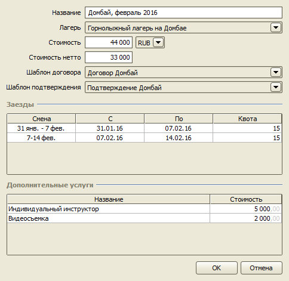
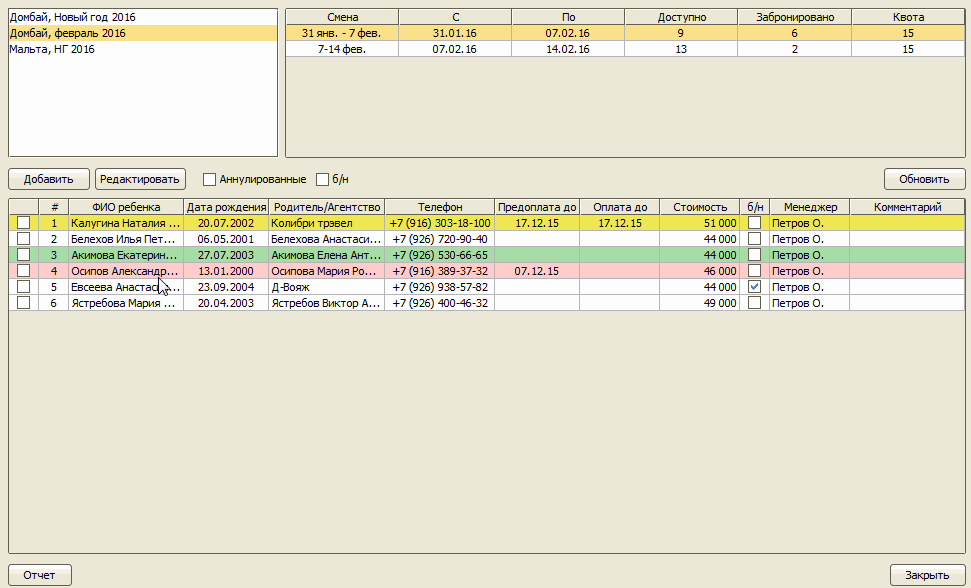

Детские лагеря
Модуль "Детские лагеря" предназначен для автоматизации продаж в турфирме, реализующей путевки в детские лагеря. В состав
модуля входят:
- справочник "Детские лагеря",
- справочник "Услуги",
- справочник "Программы отдыха",
- справочник "Компании",
- справочник "Рефереры",
- списки бронирований,
- интеграция с заявками,
- счета,
- отчет по бронированиям,
- отчет по выручке.
Справочник "Детские лагеря"
Список всех детских лагерей.
Справочник "Услуги"
Список дополнительных услуг, которые клиент может заказать при бронировании.
Справочник "Программы отдыха"
Справочник содержит параметры предлагаемых программах отдыха: стоимость, даты заездов, кол-во мест, дополнительные услуги.

Справочник "Компании"
В справочнике хранятся реквизиты агентства для печати договора и выписки счета.

Справочник "Рефереры"
Справочник компаний-посредников, получающих комиссию за приведенных клиентов.
Бронирования
Списки бронирований мест в заездах.
Добавление нового бронирования:

Создание заявки
На основе бронирования можно одним нажатием кнопки создать заявку.
Отчет по бронированиям
Данный отчет позволяет сформировать таблицу, состоящую из определенных колонок, с данными, отфильтрованными по различным
параметрам: заезду, агенту, рефереру, доп. услуге, и экспортировать в Excel.